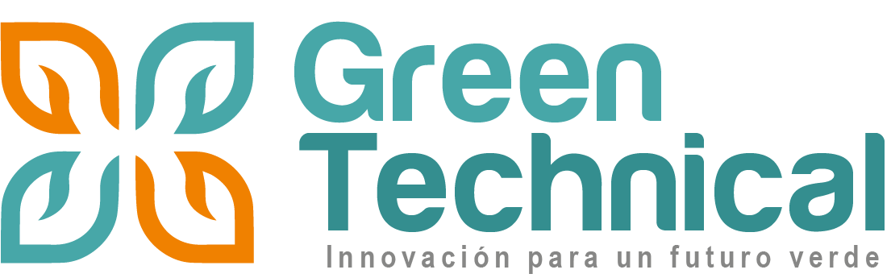

01 / AUTOMATIZACIÓN
Automatización de riego
Implementación de soluciones para controlar válvulas, bombas, fertilización y diferentes procesos del sistema de riego.

Soluciones profesionales de automatización, control de riego, monitoreo, fertilización y tecnología para proyectos agrícolas, industriales y de jardinería.

En Green Technical Perú desarrollamos y comercializamos soluciones para riego tecnificado, automatización, monitoreo y control de sistemas agrícolas e industriales.
Trabajamos con tecnología de automatización para ayudar a nuestros clientes a controlar sus sistemas de riego y optimizar sus operaciones.
Brindar soluciones tecnológicas para la automatización y gestión eficiente de sistemas de riego, ofreciendo equipos, instalación, configuración y soporte.
Contribuir al desarrollo de una agricultura más eficiente mediante tecnología, automatización, monitoreo y uso responsable de los recursos.
Explora los equipos por categoría. Haz clic sobre cualquier producto para ver su descripción y solicitar información.
Acompañamos cada proyecto desde la selección de equipos hasta la instalación, configuración y puesta en funcionamiento.
Implementación de soluciones para controlar válvulas, bombas, fertilización y diferentes procesos del sistema de riego.
Implementación de sistemas RTU para controlar y monitorear dispositivos ubicados a distancia.
Automatización y control de procesos relacionados con la aplicación de fertilizantes mediante sistemas de riego.
Instalación, programación, configuración y puesta en funcionamiento de equipos de automatización.
Integramos controladores, tecnologías RTU, software, sensores y soluciones de comunicación para gestionar sistemas de riego.
Videos y materiales de capacitación para conocer el funcionamiento de los equipos y sistemas de automatización.
Capacitación sobre automatización de equipos Talgil, incluyendo DREAM 2, SAPIR y sistema RF G5.
Material audiovisual para conocer los sistemas de automatización y control de riego.
Cuéntanos qué necesitas y nuestro equipo puede ayudarte a encontrar una solución.